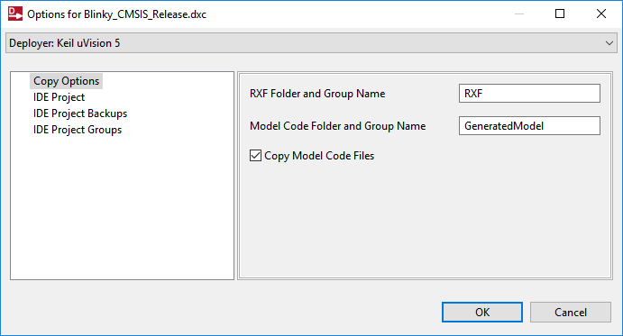
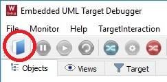
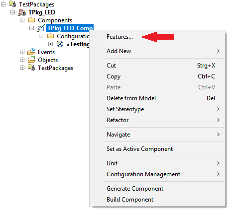
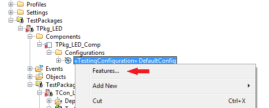
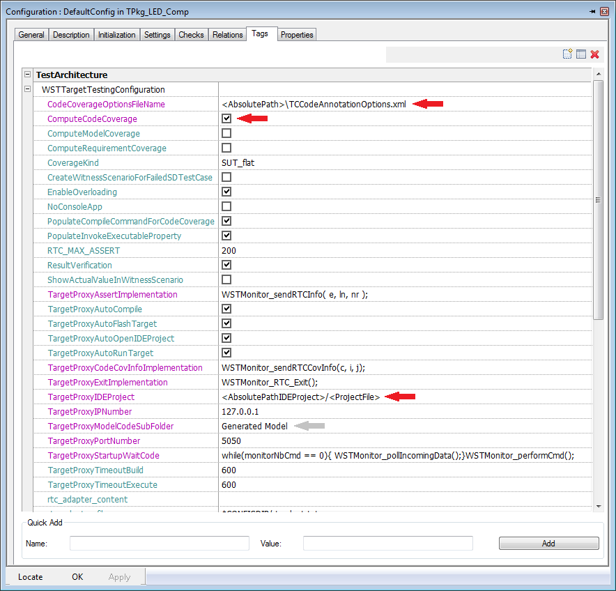

Full Table of Contents - Willert Software Tools Documentation
- Introduction
- Usage
- Technology
- Support
- General
Willert Software Tools RXF - Introduction
Embedded UML RXF
Embedded UML RXF™ (Real-time eXecution Framework) from Willert Software Tools is the interface between a UML model and the target platform. It facilitates the use of UML in connection with code generation for even small target platforms.
Product RXF_Rpy_CPP_V7.05_edu
For a seamless integration of the Embedded UML RXF™ in your specific hardware and development tools environment, this product was prepared to support the following components:
== Product RXF_Rpy_CPP == Environment ....... : Generic Environment ModelingLang ...... : Rhapsody in C++ Modeling .......... : IBM Rational Rhapsody Core .............. : C++ Customer .......... : Generic
Using These Help Files
All major pages of the help contents are available via the navigation table-of-contents displayed on the left side of each page. Under the "General" section you can also open an extended "Table of Contents" or an "Alphabetical Index" containing keywords used inside the help pages and the available links to the matching help sections. If you experience problems with the left side navigation table-of-contents, please make sure JavaScript is enabled and allowed for these help files in your browser.How to Get Started
It is recommended to get familiar with the installation of your product by reading the "Usage" section of the help. At least you should take the time to read the "Installation" section and then go through the "Getting Started" tutorial.
Product Restrictions
The Embedded UML RXF is adapted to seamlessly integrate into the development environment toolchain. This requires several interfaces which may result in restrictions which are not caused by the RXF itself, but also the RXF has some restrictions.
RXF Framework Restrictions
-
Destruction of Active and Active-Reactive Classes is not yet supported
Unordered relations using OMCollection, OMStaticArray are not supported, as they can not be allocated from static fixed size Pools and therefore are not useful in embedded systems. Use ordered Relations (OMList) instead.
In statecharts, default Transitions and every other states, that are connected to the initial state via a null transition are executed from the context that calls Start Behavior. In earlier Versions, default transitions from the initial state were executed not before startDispatching(). It is bad practice to use outgoing null transitions. Be careful with that!
Only Statechart Implementation Flat is supported. Code generation for Statechart Implementation Reusable is not supported.
Activity diagram code generation is not supported.
Embedded UML Target Debugger - Introduction
The Embedded UML Target Debugger is a product developed by Willert Software Tools GmbH. It allows you to analyse the software behavior on target. This is similar to a conventional high level language debugger, but on UML level. This includes:
- live animation of sequence diagrams to trace the event order and state changes on target.
- live animation of embedded timing diagrams showing the events and state changes on a tick timer granularity timeline.
- see which instances of your objects which have a statechart have been created and destroyed.
- navigate through a model element tree to show attributes or the current state of a statechart for any instance.
- inject events from the host-side and track the reaction of the target.
- see timeout events which have elapsed on target in the diagrams.
- monitor the elapsed time-ticks between two events.
It consists of a Windows application which let you control the debugging and see the feedback from target and a monitor solution which is part of the executable on target.The Embedded UML Target Debugger has been designed with a minimal overhead in footprint and disturbance of the behavior of your model in mind. Therefore, most of the work is done at runtime on your PC and as little as possible on your target. On the PC, you can view an animated sequence diagram of your target live. The target only sends very short messages when objects are created, destroyed or events are being send. It also can react to commands from the host. The messages and commands never contain symbolic data, but only memory addresses or identification codes to keep the data size small. This requires:
- Information used at startup of the Embedded UML Target Debugger on your PC. This information is stored in an XML file. This file is created using a simplifier helper during Rhapsody's code generation.
- Information send from the target, like which
object has been created or destroyed, which event is send etc. For
sending information and receiving commands from the Embedded UML
Target Debugger on the PC, we need some interface. This can be a serial
interface but also CAN, JTAG or whatever I/O interface can be used. For
this example, we are working with a serial interface. But other
interfaces are available and you are free to implement whatever I/O you
like. A sample DLL interface for the host side is bundled with the
Embedded UML Target Debugger.
Product Usage
In this section, you will find information on how to use your product RXF_Rpy_CPP. This covers:
- How your product is being installed and what the installed directory structure looks like.
- How you can uninstall Willert products.
- A getting started tutorial which should be the first steps to go through after the product has been installed to verify the correct co-working of all installed tools.
- Additional information about the advanced usage of your product.
Installation
The installation of a generic RXF by Willert Software Tools requires you to already have installed:
- Your Modeling tool IBM Rational Rhapsody
Its highly recommended to have the RXF installed in the same directory on every Developers PC. Use for example C:\Willert or C:\DevTools\Willert. It also makes config management and collaborative work easier. Read Configuration Management for best practice config management with Rhapsody and the RXF.
To install a product just launch Setup.exe and follow the steps which are displayed.

Possible Problems During Setup
If you experience any problems, please first check the following possible solutions:
- Make sure you have the necessary read/write access privileges in the destination directory or directories.
- Make sure you have enough disk space available.
- Only Windows 7 and Windows 10 are supported operating systems.
- Sometimes direct installation from or to a network drive, long source
path names and in rare cases directly from a DVD may cause problems. If
setup failed you may retry it after copying all files from the
installation folder (including "WILLERT" folder) onto a directory on
your local drive (e.g. "C:\Temp\WillertSetup\") and launching Setup.exe from there.
- Setup will write an installation log file with helpful
information for our support team into the destination folder. It will
be named WST_Install_Log_<date>_<time>.txt.
If Setup can not access the specified destination path to write the log
file, it will show this error message and try to write it to drive C:
in the root directory:

- The "WILLERT" folder beside Setup.exe contains all the files that will be copied to your installation directory. But it will perform several operations on them during installation like macro expansions, conditional operations, path replacements etc. So please don't copy any files from the WILLERT folder contents to your destination directory manually, always use Setup.exe.
Contents of an Installation Directory
There are some files and a folder located beside Setup.exe. This section briefly describes what they are.
1. Folder containing files required by the Setup. Please never copy contents manually.
2. Autorun information, useful if the Setup is located on a DVD
3. License information, will also be displayed during Setup
4. Readme, specific for your product, will also be displayed during Setup
5. An entry point to the HTML RXF Documentation
6. The actual Setup that has the be executed
7. Configuration and command file in a proprietary format for Setup.exe
Multi-User Setup with Windows 7
When installing the RXF in Windows 7 the default paths for the Willert folder is located under the user's homepath. It is recommended if a single user should work on one PC with the RXF and makes sure read/write access to that directory is no problem. But if multiple users on one machine should work with the RXF, it is recommended to install the RXF and also other toolchains (like IBM Rational Rhapsody and your IDE and Compiler) directly in a dedicated directory on the hard disk's root. For exaple C:\Willert\ or C:\Dev\Willert. This makes sure these folders are accessible for all users on most setups.
What's New in V7 (Willert RXF Version 7)
The RXF is currently available in major version 7 and has been completely redesigned as it is generated from a rhapsody model now. It allows Willert Software Tools to create more generic product releases. The customer benefits from reduced dependencys to special components like board, compiler, IDE and RTOS, which helps the customer to be more flexible in the tool selection.
Memory Management
RXF V7 has an improved Memory Management, which uses static Memory Pools for internaly used dynamic memory allocation. This is faster and more transparent than the old V6 Memory Management.
WSTDeployer
The WSTDeployer is now independent of the IDE to deploy to what allows one Framework to be used with multiple IDEs. Also the Deployer allows selective Deployment of RXF Sources, which makes it possible to deliver multiple RTOS adaptions with one framework.
OXF Container Classes
As the deployer needs to deploy all selected Variants from Framework Sources flat to one RXF directory, also the oxf container class folder is deployed flat now. If include pahts like <oxf\omcollec.h>, <oxf\omlist.h> or <oxf\ommap.h> are added manually to the user model the have to be changed to <omcollec.h>, <omlist.h> or <ommap.h>. For generated code, this is fixed automatically through the new Framework Profile.
Rhapsody Integration
No WST_RXF_V6.prp or WST_RXF_V7.prp file is required and included in SiteC.prp or SiteC++.prp. Properties are now defined in the RXF stereotype as part of the product specific profile.
Getting Started Example - Part 1
This page will guide you through the first steps of using your product RXF_Rpy_CPP_V7.05_edu. The goal is to generate source code from an included sample UML project with Rhapsody
Generating Code from the Rhapsody Model
Open the Rhapsody project Blinky from the directory
C:\DevTools\Willert\RXF_Rpy_CPP_V7.05_edu\Samples\Model\Blinky:
Open the Components and select the RTOS you want to use.
Therefore perform a right click on your configuration you want to use and selct "Set as Active Configuration".
The configuration is using the stereotype RXF which is defined in the profile WST_Rpy_CPP_Profile. Each RXF by Willert Software Tools comes with its own profile with the stereotype RXF. RXF sets the proper environment, some properties for the RXF and defines some Tags. The referenced setting, WSTStyle, is used to set Rhapsody GUI details which makes it easier for you to view and maintain your models. It does not influence the code generation.
How the RXF can be configured in detail can be found in the section "RXF Configuration"
You can now press the button "Generate/Make/Run" in Rhapsody (or use Generate/Make/Run entry from Code menu) to perform these steps:
- Generate source files.
- Rhapsody will show several generated .cpp and .h files along with a .bat file in the Log tab.
- A successful code generation will end with the log entries "Code Generation Done" and "0 Error(s), 0 Warning(s),
0 Message(s)".
- The Make step
executes the generated batch file from the previous step. The batch
file generates a RXF configuration
file and than launch the deployer to embed the generated source files
into your IDE project. The building of the executable will be performed
inside
your IDE and must be executed by the user. The generated configuration
file is:
- WST_CFG.h
which is an include file which contains constants and defines to configure the RXF which are derived
from properties and tags set in the model like buffer sizes etc.
The RXF can be configured completely by the model. No defines must be set on code level. Therefore different models can use the same RXF wit different RXF configurations. - The Run step opens the cofigured IDE Project and in addition can be used by the user to execute user defined applications / scripts. The Batch File C:\Dev Tools\Willert\RXF_Rpy_CPP_V7.05_edu\Tools\RhapsodyRun.bat is executed in this step.
WSTDeployer
The WSTDeployer will deploy Rhapsody generated source files the RXF configuration file WST_CFG.h into your IDE. Until now the generated source is independent from compiler and IDE.
The first time you press the "Generate/Make/Run" button the Deployer window will automatically pop up.
First select your IDE which you want to deploy to:
Second select your project file which you want to deploy to:
An empty example project file you find under:
<RXF installation folder>/Samples/Model/Blinky/IDEProjects/<RTOS>/<Board>/<IDE>
The IDE Project Folders are sorted by RTOS and in each RTOS Folder there are different Bord Projects for different IDEs.
Be sure the RTOS selection made before in the Tags of RXF Configuration matches the RTOS in your IDE Project. Otherwise the Framework Sources will not work with the RTOS sources.
Third Configure deployer options

You can chose between two options: Copy source files into the IDE project or reference them into the IDE project.
When you chose to copy them you can define here the name of the folders where they are copied to.
After pressing OK the files are deployed into your IDE project and you get information of the deployment into your Rhapsody console.
Info:If you want to change the Deployer settings, open "Tools" -> "RXF_Rpy_CPP_V7.05_edu Deployer Configuration"
Continue Reading Part 2 of this Getting Started Tutorial
Getting Started Example - Part 2
This page will guide you through the necessary steps to build your generated source files inside your compiler/linker toolchain.
Please make sure you have followed the steps of the Getting Started Example Part 1 and deployed your generated code sucessfully to your IDE before continuing on this page.
Building Target Executable
The selected IDE Project from the last step should be open now. If not, open the selected IDE project located in C:\Dev Tools\Willert\RXF_Rpy_CPP_V7.05_edu\Samples\Model\Blinky\IDEProjects manually now.
You may need to configure the debug settings to your needs and hardware. Please check debugging settings carefully (depending on Simulator Software or Debugger Hardware).
Now build and rund and verify it is working correctly. If the project is running on target, you will see two LEDs blinking in individual timings (running in separate tasks) on the evaluation board. If you chose the OORTX as RTOS, only one LED will blink, because OORTX does not support active Classes / multiple RTOS Tasks. If you have compiled for windows or linux, a terminal window with LED on and LED off statements should appear.
Debugging on Hardware
You can set up the debug configuration according to your needs.
After downloading / flashing to target and entering debugging mode, you can debug the software on Source level as usual.
 If you have reached this point, you have now
successfully verified the
correct working of your installation!
If you have reached this point, you have now
successfully verified the
correct working of your installation!
RXF Component Properties
The RXF can be completely configured inside your model.
By applying the stereotype "RXF", new Properties Perspectives become available:
Use those Properties to configure you RXF
In the near feature Property Documentation will be available directly from Rhapsody.
As long as Rhapsody Property Docu is not available, find it here:

Select the RTOS you want to use. Be aware that this tag only tells the deployer which RXF sources to deploy. No RTOS files are added to the IDE automatically. Your IDE Project has to contain all needed RTOS sources.
Select the Target you want to use.
Specific Target adaptations can be done inside your IDE project.
WST_MAIN
Should the RXF provide the main() operation or is it provided by RTOS / UserCode?
If this tag is set to fallse, no main() is generated and the RXF has to be started by the user by calling the operations WST_MTSK_start() and WST_RTOS_startKernel(). These Operations can be called from a C or C++ context. Take care that the RXF is initialized correct when using an own main routine.
Only needed if Target == CMSIS
If you use the CMSIS software pack mechanism for ARM CortexM development, a file RTE_Components.h will be auto generated by uVision. In this file you will finde a define CMSIS_devie_header wich contains the correct include file for your selected controller. If your IDE don't provide this mechanism, you can enter your CMSIS device header file here, for example type "lpc17xx.h" here (with Quotes).
Define how many UML Timeouts can be active at the same time.
Set how many milliseconds representing one system tick / RTOS tick.
This information is needed to convert UML timer into RTOS timer.
Because timeouts are synchronized to a tick, the tick is responsible for the granularity. Timeouts are round up to the next possible multiple of a tick period.
If the system is used to capacity, a timeout could be scheduled at the end of a tick period.
If this happens, the resulting timout time would be less than expected.
To ensure a timout with minimum the desired value, 1 tick has to be added.
This means that timeouts that are scheduled at the beginning of a tick period will take 1 tick longer than expected!
Be aware that the timeout is only scheduled at this time and it can take even longer till it is scheduled.
How many null transitions (transition without a trigger) can be performed in a row until the WST error handler is called. (Infinity loop protection)
Enables the high water marks to check how many memory blocks have been used at the same time. For more information please look here.
Define the main task an default task priority.
Define the main task an default task stack size.
The memory management is described in the section Memory Management.
Define if ports are supported by the RXF or not to save resources.
Define the default value of how many ListBlocks are used in ordered associations.
Define the default value of the size of a ListBlock used in ordered associations.
Define the default value of how many MapBlocks are used in an associations with a qualifier.
Define the default value of the size of a MapBlock used in an associations with a qualifier.
By activate this tag every time the code generation is triggered the parameter "CPP_CG.WillertRXF.ProjectPath" is set to the current path of the Rhapsody model. This can be useful if the model is under subversion control and the model is checked out at different locations. Therefore the property "CPP_CG.WillertRXF.ProjectPath" can be used to start user applications / scripts which are stored relative to the model path. The reason: While code generation / execution Rhapsody only provides the path of the generated code path but not the path to the model.
Info: this property will only be changed if the new value is different from the previous value but if it is different it will change the model itself and you need a write permission
Buildsets (Debug / Release)
It is very likely that you want to distinguish between optimized production code, and code you want to debug. For this, your product supports two buildsets, as defined in the property CPP_CG::WillertRXF::BuildCommandSet.
The main difference is the defines which will be generated into WST_CFG.h.
The Debug Buildset will define _DEBUG and HIGHWATERMARKS per default, while Release will define NDEBUG. This is because the Rhapsody generated makefile will use one of the properties CPPCompileDebug or CPPCompileRelease inside the CPPCompileSwitches property.
These resulting CppCompileSwitches should include -D<macro definition> options only. The reason for this, is that you build your application in your IDE. That is where you specify for example include paths and other options. The options or macros set via the property CppCompileSwitches result in #defines in a generated CFG.h when you select Code | Build or Code | Rebuild in Rhapsody.
NOTE If you are creating a library from the RXF sources which gets used inside your application, the options or constants set via property CppCompileSwitches must match the options in your IDE project to create RXF libraries. You should not compile the RXF libraries with for example support for UML ports, or use highwatermarks in a debug version, and use different options to compile your application with.
Embedded UML Target Debugger - Usage Example
The Embedded UML Target Debugger is a product developed by Willert Software Tools GmbH. It allows you to analyse the software behavior on your target using UML Diagrams. This is similar to a conventional high level language debugger, but on UML level. Basically the UML Target Debugger will write Sequence Diagrams and Timing Diagrams from the information that the RXF Framework on your target provides.
Care has been taken to ensure that the influence on the real-time behaviour of the RXF is as minimal as possible.To create the diagrams, the Target Debugger needs information. This information is in the model and also in the generated source code.Minimalizing the influence on real-time behaviour means: sending as little information as possible from the target to the host.
The Target debugger will read most of the symbolic information it needs from an XML file that was generated during code generation. The user does not have to do anything to do this, the RXF code generation will do that automatically for you. The symbols used in the generated diagrams are coded so that only small pieces of information must be sent pysically via teh Target Debugger Communication channel.
This communication channel is something that must be implemented when adapting the Target Debugger to the users environment. It can be anything that can be used on target and host. Serial, TCP/IP, CAN, JTAG or something propriartry.
This page will guide you through the first steps how to use the Embedded UML Target Debugger.
To be able to work with the Embedded UML Target Debugger and view the target animation, please first go through the GettingStarted example. We will extend this example to explain the target Debugger.
Basic Functionality - Getting Started with the Embedded UML Target Debugger
For the first steps with our Embedded UML Target Debugger, it is highly recommended to use our example model instead of your own model. This example will be based on IBM Rational Rhapsody as UML Tool. However the steps and Target Debugger functionality when working with another UML tool are very similar. We will use Blinky.rpy, which is a good starting point.
In your Rhapsody Model make sure to have the RXFAnimation stereotype is set for your active component or Configuration. This will trigger the code generator to generate the needed XML file and also the necessary extra code.
Additional you need to set an WSTMonitorIO_* Stereotype to select the communication channel you want to use to transmit Data between the Target and the UML Target Debugger. In this case the ITM channel is selected by using the Stereotype WSTMonitorIO_CortexITM. If no applicable Communication Stereotype is available for which supports your device please contact the Willert Support: support@willert.de
After setting these Stereotypes some additional Tags will be added to your Component / Configuration.
This is shown in the picture below.
The Subject "RXFAnimation" contains general settings for the Monitor. The Subject "WSTMonitorIO_*" contains settings for the choosen communication between Target and UML Target Debugger and can contain additional settings depending on the communication type selected. For example port number for a TCP/IP connection or message ID for a CAN connection. Here are some of teh used tags with a description:- AnimationType: You can choose between WST_FULL_ANIMATION (default) and WST_TRACE_ANIMATION.
- FULL: Split the information of an Event into three packages
1. Event is put into the message queue
2. Event consumtion start
3. Event consumption end - TRACE: Event information is send to UML Target Debugger in one package at event start to avoid overhead.
- MaxParallelStates: This numeric value should represent the count of parallelStates of the the statechart with the most parallel states. If this number is to large unnecessary data is send to the UML Target Debugger. If this numer is to small there is the posibility of loosing data. You can find out the number of parallel States by checking the count of state attributes of the class which has the suffix "_active". (Default: 4U)
- sendParameters: Switch on/off of sending event / operation parameter. (Default: Yes)
- MaxPrintIntObjects: Number of filtered instances which can send integer values to the UML Target Debugger. (This feature will be described more in detail). If you don not need this functionality you can switch it of by setting the value to 0. (Default: 0)
- MonitorTaskStackSize: The monitor uses a task to send / receive data. This Tag can be used to define the stack size of the monitor task. (Default: 1024U)
- MonitorTaskName: Name of the monitor task. (Default: "MonitorTask")
- MonitorReceiveCommandBufferSize: Maximum size of a command which can be handled by the monitor when receiving a command from the UML Target Debugger. 32U should be sufficient as long as you don't want to inject events with a huge amount of parameter data. (Default: 32U)
- MonitorSendBufferSize: Buffer to collect data while your application is running which are send to the UML Target Debugger when the monitor task is active. (Default: 1024U)
- MonitorReceiveBufferSize: Buffer which stores received data from the UML Target Debugger which are handled inside the monitor task. (Default: 32U)
Make sure you have an empty GettingStarted IDE project you can deploy to. (If the GettingStarted is not empty, there is a GettingStartedBackup that should be empty, just copy it and rename it).
You can now perform a Generate/Make/Run in Rhapsody. This will generate code, generate the RXF files and start the deployer. Select the GettingStarted Project (Or the project you just copied) and the deployer will deploy the Rhapsody generated files to your IDE, and build the GettingStarted example. After a successful build in your IDE, flash the executable to the target but do not start program execution yet!. The target program must be reset and stopped. Otherwise the Embedded UML Target Debugger will miss important information about dynamically created objects the target sends.
Now start the Embedded UML Target Debugger on the PC. Launch the batch file located under <RXF installation folder>\Tools\TargetDebugger\Embedded_Uml_Target_Debugger.bat.
The Embedded UML Target Debugger first need to read the XML file which has been generated using a simplifier helper during Rhapsody's code generation. This file is called as your active configuration.xml and created in the path model file. You can open the XML file using File | Open XML File or via button on the toolbar:
After the XMLData.xml file was opened, you have to select the target communication plugin you want to use from the drop down list by clicking on the IO plugin selection button:
In the next step you can select the communication parameters depending on the communication interface. This example works with the Keil Plugin communication. (Communication chain: UML Target Debugger <-> Keil µVision <-> ITM interface of a Cortex-M device)
After selecting a plugin a configuration window will pop up to config the communication with the target.
Important for this plugin before press Ok:- Make sure that µVision is already running because this plugin will connect directly to µVision.
- Make sure that the
µVision API is enabled by checking:
In retrospect it is always possible to change the communication plugin and settings by using the toolbar buttons.
Now switch back to your IDE and start program execution on target, as the Embedded UML Target Debugger now listens for commands sent from target. In the tree view on the left you can now also see values of attributes and states.
You will see something like this:
Explaining the GUI
The Menu
This area contains short cuts to the most common functions of the UML Target Debugger.
The same functions can be found in the tools menu.The Browser Area
The browser Area is split into three parts:
Objects:
After the Target Debugger is started, the XML file is loaded and the communication channel was setup and started, the target can start sending information.Views:
The view tab manage your recorded / loaded sessions.
You can generate / edit views on your recorded data.

This means you can filter your recorded data by event information (sender / receiver / event type )
Additional you can save and load such filter views.
Open a selected view in a separate window to compare it with another view.
You can save a selected view to your computer to share it with colleges.
You can save a selected view as *.csv file.
Target:
This tab give you control about the target filter.
This means you can select while runtime which events and instances are send from your Target to the UML Target Debugger.
This can be very important when your model becomes very big and you have to separate which information is send to the UML Target Debugger to avoid a buffer overflow on target side.The Diagram Area
This area shows your selected view as sequence or timing diagram.
Console
The Console window shows information on actions you perform to get a feedback of what you did.
This is the "normal" functionality of the Target Debugger. There is much more, the following chapters explain (briefly) some of the more advanced features.Advanced Features
You can also click on an attribute / state: at that moment in runtime, the Embedded UML Target Debugger on the PC will query the target to send the actual value - such information is sent only on request by the PC in order to reduce the I/O traffic as much as possible. The information shown on events is actually transferred in a compact way and not as the strings you see, again to reduce traffic and thus runtime disturbance. The Request for the attribute value / state is send to the target when you colapse the item in the tree view.
Timing Diagrams
The Embedded UML Target Debugger is able to switch from the default sequence diagram view to a timing diagram view. It is a useful diagram similar to the timing diagrams known from technical data sheets to visualize state changes proportional to the time axis.
Zooming in and out is possible using the mouse wheel, if available. You can change the start tick by dragging inside the diagram with mouse or by using the Zoom controll below the timing diagram.
Event Injection
Its also possible to inject events by the Embedded UML Target Debugger to stimulate a specific behaviour on the target side.
Clicking this button will activate another Window:
To inject an event you just select the event name, an destination object an press on Inject Event. Alternativ you can can add an event to a sequence to inject more than one event at the same time.
Events may also have standard type parameters, which are supported by the Embedded UML Target Debugger. Parameters / arguments of events will be displayed as integer values inside the animated diagrams. Also event injection with arguments is possible. If you have selected to inject an event which has parameters (defined in the UML model), a window will pop up and ask for each argument. The value for each argument will be insert as unsigned int value and cast internaly to the real data type of the event parameter.
Filtering
On a larger model, showing all events and attributes is confusing, because it will not fit in a window and will lead to overhead. Therefore we have implemented a filter mechanism on the target side which can be controlled at runtime / compile time.
Change filter while runtim:
Please select the Target tab. Here you find a list of all reactive Objects. By enable / disable the depending instance the filter will be switched on / off on the target side.
Setup Filter while compile time:
If you want to activate the filter while compiletime please use following properties:
Please use CG::Class::SendToTargetDebugger for classes. This means that all instances of this class will be filtered on target side.
Please use CG::Relation::SendToTargetDebugger for Parts or Compositions. This is usefull if you have more than one instance of a class and only want to see the behaviour of special instance.
If you set both values on "unchecked" for your active configuration, all instances are filtered on the target.
Communication Buffer Overflows
When an event is consumed by the user application, event information is send to the UML Target Debugger. This information is stored inside a buffer which is send to the UML Target Debugger inside a monitor task. If the user application takes to much execution time and the monitor task has no chance to send the contant of the buffer to the UML Target Debugger the buffer will overflow at some point. If this happen event information is lost and a buffer overflow command is send to the UML Target Debugger to indicate the user that data has been lost.
More Information
To make it easier to navigate to your recent used XML files, you can select them in the file menu:
FAQ
If you have any questions, please have a look at the Animation FAQ page or contact our support team.
Model Driven Automatic Tests execution on a Realtime Target
You can also use TestConductor in combination with Animation.
Animation FAQ
This page is supposed to answer questions related to the Embedded UML Target Debugger and animation generally.
- Why do I not see any animation - there is no error shown.
- The application on the PC shows "Can not find COMx" on the error tab.
- The communication between the Target Debugger and Keil µVision does not work.
Why do I not see any animation - there is no error shown.
There are two obvious reasons for this:
- Did you use the stereotype RXFAnimation from your product's profile in your Component in Rhapsody and perform a regenerate code to optain the newest XML file?
- Did you open the XML file in the animation program on the PC and is there no error message?
- Did the generate / make / run in Rhapsody show any problems? Usually you should see something like this at the end:
- Also in your IDE you usually see some kind of message about the creation of the XML file. There should not be error messages.
Can not find COMx

You can use the communication setup dialog to configure the COM port which should be used. You can also check your Windows system settings and configure the number to be used for your serial port.
Go to your Hardware system settings:


(depending on your other hardware configuration you might even ignore the message that a desired COM port is already being used)
Exit and re-launch the Embedded UML Target Debugger on your PC and reopen the XML file, so it will re-initialize the serial interface:
Communication between the Target Debugger and Keil µVision
The Embedder UML Target Debugger can communicated with Keil µVision via the "UVSOCK" TCP/IP interface. Please activate it and configure the same port number in Keil µVision and the Embedded UML Target Debugger communication interface settings:

Rhapsody Test Conductor
You can use Rhapsody TestConductor in combination with your target. Before you can do this, please first get familiar with the Embedded UML Target Debugger Example.
The current version of the Embedded UML Target Debugger contains a basic support for execution of Rhapsody Test Conductor test cases on the target as well as the calculation of the code coverage.
The UML Target Debugger is an interface between the TestConductor, the target and the IDE as shown in picture below:
- Configure the UML Target Debugger
- Start the UML Target Debugger
- Select your data communication plugin by clicking on the blue plugin icon in the toolbar:
- Select your TestConductor IDE specific plugin byclicking on the red plugin icon in the toolbar:
- Using the TestConductor Step by Step:
- 1. Create a Test architecture
- 2. Open Component Features and Set Sterotypes
 - 3. Open Configuration Features
 - 3.1 Set Sterotype "WSTTargetTestingConfiguration" in the General tab

- 3.2 Configuration Settings (Step becomes obsolete at Rhapsody 8.1.3)
- Set Animation Mode to "None"
- 3.3 Set the path to your IDE Project in the Tag tab
- Set the Tag "TargetProxyIDEProject" to your IDE project including your project file name. (e. g. c:/Project/Blinky.uvproj)
Important: Please make sure that the UML Target Debugger is started and the communication
between the UML Target Debugger and the target is established by selecting a communication plugin.
This is necessary to build and execute the test architecture.
Now you are ready to create Test Cases and execute them the same way you used to do it as on the host. - 1. Create a Test architecture
- After a test is executed, the received results from the target will automaticly send to the Test Conductor.
Here you can find the documentation how to calculate the code coverage while executing your model on the target: Code Coverage
Rhapsody Test Conductor Code Coverage
Before you start with this chapter please get familar with the chaptar Test Conductor.
-
Using the TestConductor Code Coverage for small targets Step by Step:
- 1.First we recomand to make a copy of your current test configuration and rename it as
_Coverage.
After setup this configuration you can easy switch between normal test execution and test execution with code Coverage.
- 2.Generate the target configuration XML file. (Only need to be done once!)
For capuring the code coverage the generated source code needs to be instrumented.
This is done by an extern tool. This tool needs aditional information about the target like typesizes, endianes etc.
These information neededs to be stored in a target configuration XML file which is linked in the TCCodeAnnotationOptions.xml described in step 2:
<TargetConfigFile absolute_path="<PATH>\targetconfig.xml"/>
To create this file you have two options:
-
A. Execute following Rhapsody model on your target platform:
<Rhapsody Instalation Path>/TestConductor/CodeCoverage/TargetConfiguration
-
B. Add following C file into your IDE:
<Rhapsody Instalation Path>/TestConductor/CodeCoverage/TargetConfiguration/src/targetconf.c
Add following defines to the top of the file or into your IDE project settings:
TC_MAIN_WITH_VOID_ARGS //Your main needs no parameter
TC_MAIN=main //name of your main operation
TC_XML_OUTPUT_KIND=1 // Output will be printf
TC_ERR_OUTPUT_KIND=1 // Error output will be printf
If your devive don't support a printf output you can modify the operation "gen_out()".
In this operation you can implement your own communication chanel to the host computer like UART or ethernet.
Target Configuration File for Cm3
-
A. Execute following Rhapsody model on your target platform:
-
3. Create your own TCCodeAnnotationOptions.xml
You can find this File in the Rhapsody installation folder /TestConductor (Not your share folder in your user directory).
How to configure this file is decribed inside the file.
Here you find two example files for:
-
4. Setup the Tags in your test configuration
You need to modify following tags:
- CodeCoverageOptionsFile: Absolute or relative to your code generation path to your TCCodeAnnotationOptions.xml file of step 2.
- ComputeCodeCoverage: Checked
- TargetProxyIDEProject:
/ - (Check if correct) TargetProxyCodeModelSubFolder: Relative path to your IDE Project where your generated sources are stored. Default for all RXF products is "GeneratedModel"

-
5. Configure the WSTCodeAnotation.bat
To calculate the code coverage the generated code of your system under test, the code must be anotated.
This is done by an application from BTC. This anotation is done automaticly while running make inside Rhapsody.
To make sure the anotation tool of BTC works correct it needs the following additional information of your building environment:- Path to the BTC annotation tool in the Rhapsody installation folder
- Path to your IDE project
- Includes
- Defines
These defines and includes must be added into the file WSTCodeAnotation.bat which you can find here: "<RXF installation Path>\Tools\"
Please make sure, that you also add hidden includes of your IDE.
-
6. Regenerate Your Code by update your test package
Now you are ready to run your test cases. - for events (Default, Small, Medium, Large)
- for timeouts. Each tm() you are specifying in your UML model results in a timer object which is kept in this pool.
- for List and Map Items
- for user classes that need to be allocated dynamically
- WST_EVT_DEFAULT_BLOCK_COUNT (default Value = 64)
- WST_EVT_DEFAULT_BLOCK_SIZE (default Value = sizeof(WST_EVT) )
- WST_EVT_SMALL_BLOCK_COUNT (default Value = 32)
- WST_EVT_SMALL_BLOCK_SIZE (default Value = sizeof(WST_EVT) + 4 )
- WST_EVT_MEDIUM_BLOCK_COUNT (default Value = 32)
- WST_EVT_MEDIUM_BLOCK_SIZE (default Value = sizeof(WST_EVT) + 8 )
- WST_EVT_LARGE_BLOCK_COUNT (default Value = 16)
- WST_EVT_LARGE_BLOCK_SIZE (default Value = sizeof(WST_EVT) + 16 )
- WST_LIST_BLOCK_COUNT (default Value = 0)
- WST_LIST_BLOCK_SIZE (default Value = sizeof(OMList<void *>::Item) )
- WST_MAP_BLOCK_COUNT (default Value = 0)
- WST_MAP_BLOCK_SIZE (default Value = sizeof(OMMap<int, void *>::Item)
- For the timer pool: WST_TMR_timerPool
- For the default event pool: WST_EVT_defaultPool
- For the small event pool: WST_EVT_smallPool
- For the medium event pool: WST_EVT_mediumPool
- For the large event pool: WST_EVT_largePool
- For the list pool: WST_LIST_pool
- For the map pool: WST_MAP_pool
- Create a new Package in you UML Model
- Apply the stereotype RXFConfigurationPackage to this Package. The Package now is located under RXFConfigurationPackages and a Template Implementation of WST_ERR is copied to this Package.
- Modify the Implementation of WST_ERR::error() to fit your needs.
- The FAQ section of our homepage: http://www.willert.de
- Our support forum for RXF, UML and Rhapsody questions: http://www.umlforum.de/
- The websites of your tool manufacturers
- send all your support questions via email to support@willert.de
- preferably in english
- the subject line should very briefly describe your question
(e.g. preferably
"RXF_Rpy_CPP_V7.05_edu: missing RxfConstants.h"
instead of "RXF problem") - your email must include the following version information:
-
- RXF version: RXF_Rpy_CPP_V7.05_edu
- Rhapsody version, e.g. Rhapsody in C 7.6 Build xxxx
- Toolchain versions, e.g. Keil uVision4.2x, Keil MDK-ARM V4.22
- RTOS version, if applicable
- Hardware Configuration Wizard (e.g. DAvE or ProcessorExpert) version, if applicable
- Attachments of relevant files, see below.
- in general
-
- screenshots often help understanding your question. Please attach screenshots in JPG or PNG format.
- especially if you experience problems shortly after a product has been installed:
-
- WST_Install_Log_<date>_<time>.txt, containing detailed information about possible problems during RXF installation
- <your Rhapsody>\Share\Properties\Site<Language>.prp, helpful if the installer had problems modifying this file
- if you experience a problem that might be related to the WSTDeployer:
-
- Tools\WSTDeployer\WSTDeployerLog.txt, containing a detailed log of everything that happened or went wrong during deployment
- if your question is related to your UML model
-
- The UML model including needed external files, compressed as a ZIP archive. Often there is no other way to answer your model specific questions than looking at the model ourselves. If you may not send your model, the model is too complex to easily describe when it goes wrong or if special hard- and software is required for reproduction, you should consider creating a tiny example model that lets you reproduce the same problem and send the tiny one.
- The FAQ section of our homepage: http://www.willert.de
- Our support forum for RXF, UML, Rhapsody and Enterprise Architect related questions: http://www.umlforum.de/
- The websites of your tool manufacturers
Deinstallation of the Product
You may use the Windows control panel functionality to remove installed software from your machine. Willert products can be removed one by one this way. After all product specific files have been removed by the Willert uninstaller during a guided deinstallation procedure, only the folder C:\Dev Tools\Willert\Uninstall will stay on your system. It contains information about all products and the associated deinstallations that have been installed on your machine. You may remove the whole C:\Dev Tools\Willert folder after deinstalling ALL Willert products from your machine.RXF Technology
This chapter describes the more detailed working of the Realtime eXecution Framework and allows to fine tune applications using the RXF to improve and optimize them and the co-working with our RXF technologies.
Realtime Compliant Dynamic Memory Management
In many realtime embedded systems, the use of dynamic memory management via the standard C library functions malloc() and free() or in C++ the operators new and delete is not wanted or even not allowed. The main reason for not using heap functions is fragmentation: after allocating and freeing chunks of memory, the heap gets cluttered with areas which are in use, and areas which are free and it becomes more and more difficult to find a suitable area for some object or structure which must be allocated at runtime. Another reason is that the standard functions are not real-time compliant, calling them at the same time from different threads will cause errors.
Instead of using the heap, the RXF offers static pools for various purposes and overrides the operators new and delete in selected classes to map allocation of these classes to fixted static pools at compile time. There are static pools available
Events
Events are normally generated dynamically, using the operator new. The size of an event will vary, depending on the number of arguments. That's why it might not be the most efficient option to allocate all of them from one pool and the framework provides 4 Pools where all events are automatically allocated from:
Automatic Pool Selection
To keep memory allocation for events as simple as possible an event automatically will find a pool with the right size, as long as there is one, that is big enough. The event will start to look for a right pool with the Default Pool. If the size does not fit, it will look in the Small, Medium and Large Event Pool. The Sizes are definded in the RXF Component Tags:
The Event Table can be used to have a better overview over all project events and their number and type of arguments. In combination with High Water Marks it can be used to optimize the pool sizes.Timeouts
As all timer / timeout objects are the same size, they are all allocated from the timer pool. A timer object holds all information to controll a timer (mostly an RTOS timer) and in case of timeout it is actually translated into an event. The timeout object itself remains in the timeout pool, and its address is inserted in the event queue of the destination task.
The number of available timeouts can be configured via the tag WST_MAX_TIMEOUTS.
Setting WST_MAX_TIMEOUTS to 0 will cause the framework to remove all timer code and thus be much smaller.
List and Map Items
In Rhapsody List and Map Items have to be allocated dynamically. If the List and Map Pools are deactivated, the heap will be used. To prevent heap usage, pools can be activated by setting the Tags
You have to escape < and > with ^Objects of user Classes
If you wan't to allocate objects of a user class dynamically by default new and delete will allocate memory from the heap. If you wan't to use pools for user classes to, you can use the common way in rhapsody by setting the property BaseNumberOfInstances to the required maximum amount of instances. A specific pool for this class will be created and operators new and delete will be mapped to this pool. By setting BaseNumberOfInstances the content of the Properties StaticMemoryIncludeFile, StaticMemoryPoolDeclaration and StaticMemoryPoolImplementation will be included in the generated code. If you wan't to implement an own memory management for user classes, you can override these properties to fit your needs.
High Water Marks
All memory pools can be configured via properties which you can set in your model. We have implemented high water marks for these so you can inspect at runtime how much resources of these pools are actually used.
The high watermarks of the common pools can be found as attribute countMax in each of the following locations:
The high water marks allow you to fine-tune the number of elements provided in the static pools.
They are enabled if the Tag WST_HWM_ENABLED is set. Then you can add the pools to your debugger's watch window to analyze the high water marks after a system has performed the desired tasks. In uVision this would look like this:
Deterministic Realtime Behavior
Deterministic here does not imply fixed-sequence polling. Although this is possible too, the RXF uses a different method to achieve a deterministic behavior. The RXF serves your generated application. It will provide services like sending and receiving events, setting and handling timers and more.
How Events are processed.
When an event is sent, the framework will store it in a queue where it will be handled as soon as possible. The handling of events is also done by the framework. Handling events also means handling expired timers that are converted to events when they expire.
An event for a specific object will be given to the generated event handle function of the Objects Class. This function carries out all the associated actions (On Entry, On Exit, in State, in Transitions) and will return the control to the framework when finished.
This will guarantee a flawless handling of events in a deterministic way. Actions can be delayed by other actions but only for a time that can easily be calculated. Actions that require hard real-Time can be safely moved to the interrupt level without loss of performance or design capabilities.
Actions are not pre-emptive and cannot be interrupted by other tasks. Interrupts are not disabled or disabled for a maximum of 4 instruction cycles (depending on the CPU). The RTOS based RXF (offering a full OSAL implementation) is of course designed to preserve all RTOS capabilities.
Triggerd Operations.
Be very carefull using triggered operations. Triggered operation calls can be ignored by the framework when the depending statechart already handles an event. In this case the behavior of the RXF is different as the behavior of the OXF from IBM. The OXF blocks the calling triggerd operation with an mutex if an event is already handled. We highly recommend to not use triggered operations.
How Time-outs (tm(xx) ) are handled.
When the tm(xx) statement is used in a state-machine, the user wants a certain delay in the processing of states. tm(xx) in a transition means: Wait at least xx milliseconds and then take this transition (and execute all attached actions)
The timer ticks are derived from a system tick that is either implemented in the framework (By using a hardware timer) or by using the timer ticks from an operating system. Both ways have a limit to the minimal time that can be used. If the timer tick is 10ms then no timeout can be under 10ms. Also no timeout should be other then a multiple of 10.
When this happens to be the case, the framework calculates the correct timout value. Due to the fact that the timer is derived from an external tick source, it is possible that a timeout request occurs just before a tick would happen or just after a tick has happened. The granularity of the ticks is the minimum tick value. This means that using a tm(10) on a 10 millisecond tick system can give you a tick time between 10ms and 20ms.
[tm(0)] will always expire when the next tick is there. (so maximum of 10mS)
[tm(1)] will always expire at the second next tick (so 10ms-20ms later)
[tm(2) - tm(10)] will give the same result as a tm(1)
tm(11) - expires after 20ms-30ms
and so on.
So the parameter in tm(xx) indicates the MINIMUM time to pass before the transition is taken!
Note: Please read the decription of the tag "WST_TIMEOUT_GUARANTEE_TIME"
NULL-Transitions in a State Machine.
In a statechart it is possible to model state transitions which are directly to be taken, without waiting for an event as a trigger. These are so called NULL-transitions. The RXF includes a mechanism to detect endless loops of NULL-transitions (e.g. because of a design failure in Modeling a state machine) during runtime. An endless loop is detected, if more than a defined number of NULL-transitions occur in a row. This maximum number of directly following NULL-transitions can be configured in WST_FSM.h via define WST_DEFAULT_MAX_NULL_STEPS.
Error Handling
Runtime errors in the RXF are handled by the error handler WST_ERR::error(). The error handler will catch use of NULL pointers, lack of resources, etc.
The error handler function is called from several places in the Framework, the first argument indicates the error that occured, the second parameter is not always used but for instance in case of an RTOS failure, the RTOS error code is passed here.
The function WST_ERR::error() is implemented as an endless loop in the source file WST_ERR.cpp. It is strongly recommended to provide an own error handler implementation which fits your application needs.
The recommended way to modify the error handler is using the RXFConfigurationPackage-Stereotype of this Framework:
Documentation of Enumerated Error Codes
The error code names are mostly self explaining and mostly used only in one or few places in the RXF code. I you are manually debugging your code on source code level it is recommended to look at the error code and use the call stack feature or your debugger to examine where the error has occured.
Detailed Documentation of the Error Codes is located in the RXF Model and can be found as comments in WST_ERR.h
Asynchronous Messages
The Willert RXF supports communication via asynchronous messages, also known as events. This is a strong mechanism for decoupling object oriented software in run time behavior.
Event receptions in a UML model are usually consumed by classes which have their behavior modelled via a statechart. An event can for example be perfectly used to trigger a transiton to another state.
Events can be sent from any part of the application, usually within user code. The RXF supports different macros to send an event to a receiving object:
Use Case
Macro
C-Code alternative
Sending an static event from an interrupt service routine, where events may not be allocated dynamically, but where a me pointer of the sender is available. <destination object> -> GEN_ISR(<static event>) FIRE_ISR(<destination object>, <static event object>) Sending an dynamic event from anywhere to an specific destination object. <destination object> -> GEN(<receiver address>, <event name ( <parameters> )>) FIRE(<destination object>, <event name ( <parameters> )>) Sending an static event from anywhere to an specific destination object. <destination object> -> GEN_STATIC(<receiver address>, <static event object>) - Sending an dynamic event from an interrupt service routine.
Not recommended because dynamic allocation of events may take to long time for an interrupt service routine.<destination object> -> GEN_ISR_DYNAMIC(<receiver address>, <event name ( <parameters> )>) -
Software Configuration Management (SCM)
If you work on one model with a team, its absolutly neccessary to put your model into a config management solution. If you do this, a question will be, where to put the RXF and from which location to include the RXF_Rpy_CPP_Profile. The next steps will lead you throug our best prectice aproach. Precondition is that your config management tool supports externals - we use SVN and it works fine:
1. Install RXF to a folder that is available on every Developers PC (for Example C:\Willert or C:\DevToolsWillert)
2. Check in the Willert folder - This Folder has to be checked out to the same directory on each Dev PC
3. Check in your user model
4. Add the Config folder from your Willert RXF folder as external relative to your user model
5. Add the Framework Profile (RXF_Rpy_CPP_Profile) to your user Model from this external location.
Thats's it.
This approach has the advantage that the installed RXF is under config management to and you can easily switch versions by changing the RXF version number in your external. Only the Willert folder has to be checked out to the same directory on every Dev PC, the user model can be checked out to any directory (if only relative paths are used) - Nevertheless we would recomment to use same checkout directories (and also same Tool Paths) on every Dev PC.Subversion Support (svn)
For Subversion support the setting WSTSubversion can be included from Share\Settings\WST_RXF_V7\WSTSubversion. Feel free to use it and please provide feedback to support@willert.de if anything is missing.Support
Before contacting Willert with a support question, please make sure you have read the relevant sections for your question from this documentation. You can use the Alphabetical Index to locate the question related sections of the online documentation. Also make sure you have read the readme file which was displayed during framework installation and is available in Readme.txt in your product directory.
On the Web there are also different resources that might help you to find a quick answer to your question:
Contacting Willert Software Tools' Support Team
Willert Software tools handles support questions following a defined process to prioritize support questions and answer as soon as possible.
Please contact us, following these guidelines:
Attachments
You should think about attaching one or more of the following files to your support email you send to support@willert.de, to enable us to quickly find a helpful answer:
General Topics - RXF Documentation
This sections contains documentation which is not directly related to the usage of RXF_Rpy_CPP, but is helpful when developing model driven software.
Useful Links
On the Web there are also different resources that are very helpful when working with Embedded Systems, UML, Code Generation and / or Requirements Management:
- 1.First we recomand to make a copy of your current test configuration and rename it as